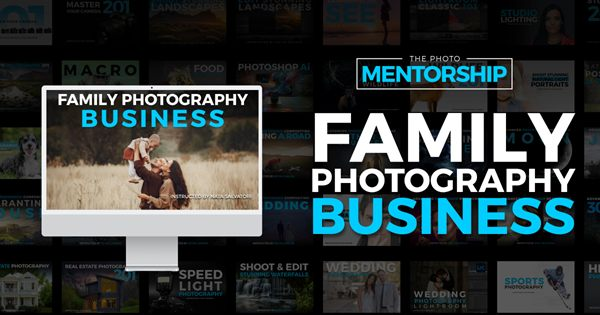

Content and campaigns for a photography educator
In my current role at The Photo Mentorship and David Molnar Photography, I create and schedule social content, publish blog lessons, and build email campaigns in ActiveCampaign.
- Client
- The Photo Mentorship / David Molnar Photography
- Period
- 2026 – now
- Role
- Marketing Assistant
- Channels
- Facebook, Instagram, YouTube, blog, email
- Collaborators
- Photography and lesson content by David Molnar and the TPM team
YouTube lesson thumbnails
Each free lesson gets four to six thumbnail options built around photos from the TPM library. The style changes with the topic: an editorial serif for portrait and family lessons, a heavy sans-serif for fast-moving wildlife lessons.
- Short headlines that read on a phone
- Text placed in empty space so it never covers the subject


Lesson carousel cards and blog graphics
For the Family Photography 101 lesson on the C.O.R.E. posing method, I designed a six-card sequence that follows the article step by step and revised it over four rounds. Blog posts also get wide graphics that teach one idea each.


ActiveCampaign emails
“There Are No Magic Settings” promotes a free bird photography lesson. I designed it for desktop and mobile, then wrote a row-by-row build spec so it could be made entirely from ActiveCampaign’s drag-and-drop blocks, with no custom code.
For the 2027 Photography Workshop Cruise campaign, I worked on a four-photo email banner and the campaign email copy.


Social posts and course promos
Link-preview and social graphics for course launches, and text-led quote posts for David Molnar Photography’s Facebook page.
